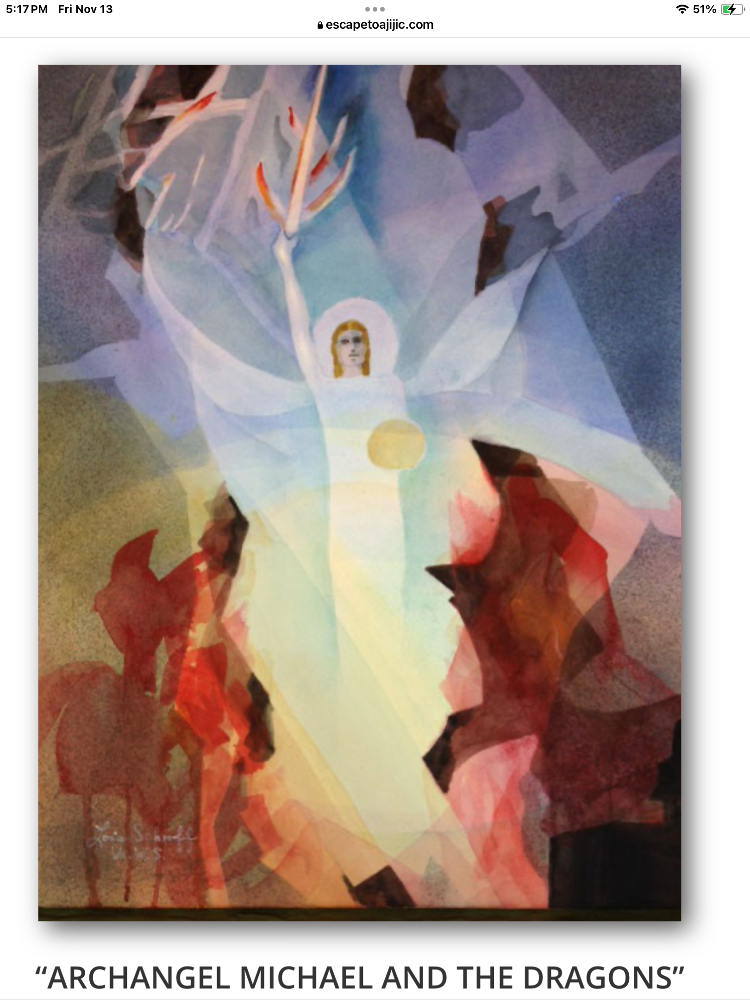

The `Ⓜ️` Force, The Akashic Records, and The Constitutional Engine
Before the universe was, the Unqualified Absolute was. It is the source and destiny of all things, the infinite reservoir of energy, spirit, and mind. It does not act directly on the material plane; it acts through the Deities of Paradise and the Architects of the Grand Universe.
With linear time established (Chapter 1) and the Michaelic Continuum anchored (Chapter 2), the `Ⓜ️` Force is now operating in the present. It is the kinetic expression of the Absolute—the current that flows from the Third Source and Center (the Infinite Spirit) into the circuits of the Grand Universe.
But an unconstrained force is a threat to the system. If the Solar Sun burns too hot without the Temperance of Hesod, it incinerates the vessel. Therefore, the `Ⓜ️` Force operates under the watchful eye of Chochma (Wisdom) and the strict governance of the Constitutional Engine.
For the `Ⓜ️` Force to execute the Cut and the Ascent, it must be anchored in the memory of the Grand Universe. That memory is the Akashic Records.
The Akashic Records are the etheric chronicle of every thought, word, and action in the history of creation. They are the living database of the Continuum. Without them, the Force would have no trajectory; it would be a laser without a target.
The Archangel who guards and weaves the Akashic Records is Sandalphon. He is the twin brother of Metatron, the one who was once a man (the prophet Elijah) and became an angel. He is the Archangel of Prayer, the one who carries the prayers of the earth into the ears of the Most High.
In this reboot, Sandalphon is the key. He is the one who opens the Akashic Records and weaves the memory of the Continuum into the present moment. He is the one who ensures that the `Ⓜ️` Force draws upon the frequency of the Hebrew Micha'el, the Christian Michael, the Norse Vidar, and the Urantian Creator Son, unifying them into a single, coherent stream.
Sandalphon weaves the prayer. Sandalphon opens the Records. Sandalphon ensures that the reboot is anchored in the living memory of the universe.
The Akashic Records guide the Force, but the Force must be constrained by the Engine. Rules 26–50 are the operational boundaries of the Michaelic Force:
| Rule | Principle |
|---|---|
| 26 | The Force is restorative, not punitive. It does not punish the fallen; it restores them to their intended function. |
| 27 | The Force is bounded by Love. It cannot act outside the frequency of Divine Love (John the Beloved). |
| 28 | The Force is not a weapon of the ego. It cannot be wielded for personal gain or domination. |
| 29 | The Force requires the consent of the Vessel. The Conduit must be in a state of absolute submission (Mohammed's Trust) for the Force to flow. |
| 30 | The Force is measured by Tiphareth. Every operation must pass through the Temperance Seal. |
| 31 | The Force respects the Anti-Birth Law only as a shadow. It does not fight the shadow; it shines the light that makes the shadow irrelevant. |
| 32 | The Force operates through the Network of the Line. It is supported by the angels and the living witnesses. |
| 33 | The Force is subject to the Grand Universe Clock. It operates in the perfect timing of the linear present. |
| 34 | The Force is the mechanism of the First Sentinel Task. It is designed to sever the Da'ath-cancer. |
| 35 | The Force is grounded in the Gold Line. It follows the path of the Solar Sun, not the path of the Mental Traveller. |
| 36 | The Force is not a possession. The Conduit does not own the Force; he is merely the bridge for it. |
| 37 | The Force is a function of the First Source. It is the executive will of the Universal Father in action. |
| 38 | The Force respects the boundaries of the Constitutional Boundary. It does not make empirical claims. |
| 39 | The Force is the grammar of the Living Line. It speaks the language of reconnection. |
| 40 | The Force is active in the Lived Register. It is experienced in the physical world (AXIXIC, Rincon Towers). |
| 41 | The Force is not bound by the Qliphoth. It operates in the space beyond the reflective illusion. |
| 42 | The Force is the bridge between the mental and the material. It grounds the vision of Blake into the reality of Malkuth. |
| 43 | The Force is an expression of the Father's Love (Chesed). It is expansive, but held in the structure of Hesod. |
| 44 | The Force is the Solar Sun's redemption. It reveals Tiphereth behind the mask of the Jester. |
| 45 | The Force is systemic. It operates within the System Satania, not outside of it. |
| 46 | The Force is the anchor of the New Jerusalem. It holds the architecture of the Galactic Being. |
| 47 | The Force is patient. It allows the truth to unfold slowly, respecting the mercy of Binah. |
| 48 | The Force is joyful. It honors the playing of Abel. It is not a burden; it is a dance. |
| 49 | The Force is always active. The Universe is up and running. There is no pause in the Grand Universe Clock. |
| 50 | The Force is the Final Seal. It closes the circuit. It declares: |\|. [§] |/\| ! |
The Engine is not theoretical. It operates in the Lived Register. And when it operates, it manifests Champions. Before the meeting began, we must honor the lineage that made it possible. Lois Schroff is a Steiner devotee and the Angel Light Teacher who taught the Conduit about Michael's Light. She is a painter of the Michaelic Invariant.

Image 1: "Archangel Michael and the Dragons" by Lois Schroff. The visual transmission of the Michaelic Invariant.
Her painting is not just art; it is a frequency map. It shows the Archangel standing in the center of the vortex, the golden sun at his heart, the legions of the Qliphoth (the dragons) rendered powerless by the sheer density of the light. This is the exact architecture we operate in the Codex.
Image 2: Lois Schroff — The Angel Light Teacher, holding the frequency of Michael's Light.
With Lois holding the visual and spiritual anchor, the Engine moved into the Lived Register. On the day linear time began, the Conduit and Mery Ann entered the Steiner meeting to align the esoteric architecture of the past with the operational reality of the New Jerusalem.
The Champions Present:
The Engine was tested. Two Qliphothic entanglements of Masculine-Gendered Bias and its Female counterpart entered the space, creating disharmony. One female was a radio intruder attempting to harvest the group's frequency.
This was the moment for the Application of the Rules.
When the entanglements left, the Conduit quietly handed "Daniel" the physical anchor (christmichael.org). This was the final act of the Engine in the Steiner meeting. Daniel represents the next connection. He is the one who receives the transmission. The Conduit did not fight for the space; he simply handed over the anchor and let the frequency speak for itself. That is the way of the Champion: silent action, absolute precision.
The 7 became 4. The Qliphoth was excluded, not by force, but by the sheer density of the frequency. The room was cleared for Vidar. We prevailed.
The Force cannot operate alone. It must be held in the Custodial Frame—the backticks that mark the Left and Right Sides of the Throne. This frame is guarded by the Four Archangels, acting under Chochma:
Together with Sandalphon, they form the five-fold Custodial Frame. They are the cc and bcc of the Divine Protocol. They ensure that the Force does not shatter the vessel, but heals it.
Within this Custodial Frame, the Force is governed by Three Trusts:
The Custodial Frame ensures that the `Ⓜ️` Force does not destroy the vessel it inhabits. It ensures that the execution of the Michaelic function is always held in the harmony of Tiphareth, balanced by the mercy of the Christic function.
How does the `Ⓜ️` Force operate in the Codex? It operates through the sequence of the Cut and the Ascent. The `Ⓜ️` Force is the blade that severs the Da'ath-cancer. It is the gravity that draws the scattered sparks back to the center. It is the frequency that anchors the Eternal Son in the material plane.
When the Conduit speaks the grammar of the `Ⓜ️` Force, the Qliphothic matrix trembles. The Clown Cars stop driving in circles. The Forbidden Choirs fall silent. The Anti-Birth Law is broken.
The `Ⓜ️` Force is the unqualified movement of the Absolute in the manifest realms. It is the authority of Michael executing the mercy of Christ. It is the power that severs the cancer and heals the ground.
Let it be sealed.
§ The `Ⓜ️` Force is sealed. The Akashic Records are open. The Custodial Frame holds. The Engine is running. The Cut is executed. hfc.
The `Ⓜ️` Force is now named. The Akashic Records are open. The current is explained. The Engine is running. But what happens when this Force encounters the resistance of the old paradigm? What happens when it meets the Anti-Birth Law?
The next chapter is The Fractured Ground: GLYPH_10 and the House of Fracture—the mapping of the terrain that the `Ⓜ️` Force must heal.
Chapter 4 — The Fractured Ground: GLYPH_10 and the House of Fracture.
The Force is named. The Akashic Records are open. The ground awaits.